library(tidyverse)
library(forecast)
library(Metrics)VectorByte Methods Training: Introduction to Time Series and Forecasting (practical)
Overview and Instructions
The goals of this practical are to:
Practice setting up data for forecasting
Practice fitting time series models for forecasting
Practice generating forecasts for a given model and evaluating its performance
Learn aggressively…. See the forecasting challenge section below :)
This practical will take you through an example of modeling a terrestrial phenology data set (how much greenness can be observed from above) from NEON and generating forecasts from the best model. Then, we will have the world’s smallest (and fastest) forecasting competition for you to practice your skills via trial by fire, because everyone learns best under pressure! :)
Set up
We will use a number of libraries for this practical, so please make sure to have them installed and loaded up front. Some, like tidyverse aren’t absolutely necessary, but we use them here to ease data formatting and for the ggplot dependencies.
Defining the Goal
The first step of forecasting is to define the forecasting goal - why the heck are you about to spend several hours of your life gathering data and modeling it?? Also, once you know that - how are you going to do it?
This process can sometimes take a really long time (even a year or more) for large forecasting projects. It often involves a team of people who have some kind of stake in the forecasting process or results.
In our case, it will just take however much time you need to read the following sentence. The goals of our forecasting exercise are to (1) Practice the forecasting process and (2) Generate 30 day out forecasts for tree greenness using data provided by the NEON Forecasting Challenge and publicly available weather data.
Getting the Data and Pre-Processing
This data set originally required some cleaning and wrangling. The version you have (NEONphenologyClean.csv) is ready to explore and model! Exploring and Visualizing the Data
A simple plot of the time series can go a long way in telling us what kinds of patterns are present. We can already see some strong evidence of seasonality and maybe a slight trend.
# Read in the clean data set
phen <- read.csv("data/NEONphenologyClean.csv")
ggplot(data = phen, aes(x = DATE, y = observation))+
geom_point() 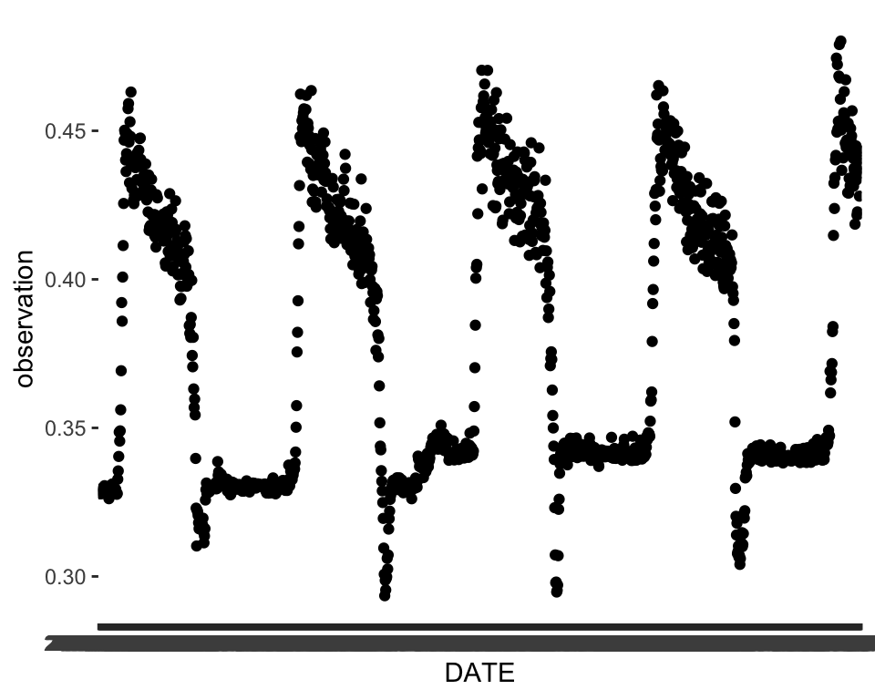
We can explore some of the predictors we have. There are a lot of them!
names(phen) [1] "X.1" "DATE" "X"
[4] "project_id" "site_id" "datetime"
[7] "duration" "variable" "observation"
[10] "update" "meanTemp" "minTemp"
[13] "maxTemp" "meanRH" "minRH"
[16] "maxRH" "totalPrecipitation" "meanWindSpeed"
[19] "maxWindSpeed" "meanTempLag1" "minTempLag1"
[22] "maxTempLag1" "meanRHLag1" "minRHLag1"
[25] "maxRHLag1" "totalPrecipitationLag1" "meanWindSpeedLag1"
[28] "maxWindSpeedLag1" We can plot some of these and see if it seems like the the patterns in the predictors match up with our main time series. For example, let’s say we choose meanTemp:
ggplot(data = phen, aes(x = DATE, y = meanTemp))+
geom_point() 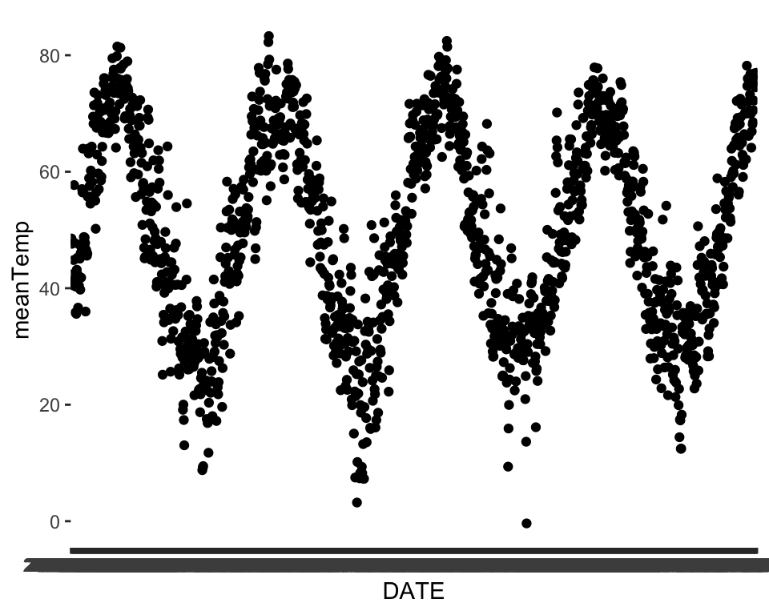
We can see that temperature seems to share an annual seasonal pattern with our variable of interest. Take some time here and explore some of the other predictors to see how they might match up.
In order to explore our data more easily in R, and also to prepare the data for many of the forecasting functions, we want to formally declare that the data are a time series by turning them into a time series object in R. We do that by using the ts() function, which is available in base R. Within the ts() function, we need to specify a frequency. The documentation does a good job of explaining what frequency is – you can take a look here:
?tsGiven the definition, we can set the frequency here to 365 because the repeating period for trees losing their leaves and greening back up is roughly one year and we have daily observations.
phenTS <- ts(phen$observation, frequency = 365) Data Exploration
Before we go further, we can get a sense of what sorts of patterns are available in our data. We’ve seen some of these before, but we also have some short-cut functions that help us visualize our time series data in a quick and dirty way. The most useful of these are the ACF (which we’ve seen before) and the decomposition plots.
The decomposition plot uses some default moving averages to visualize patterns in the data – specifically trying to get at the relative amounts of trend, seasonality, and randomness.
phenDecomp <- decompose(phenTS)
plot(phenDecomp)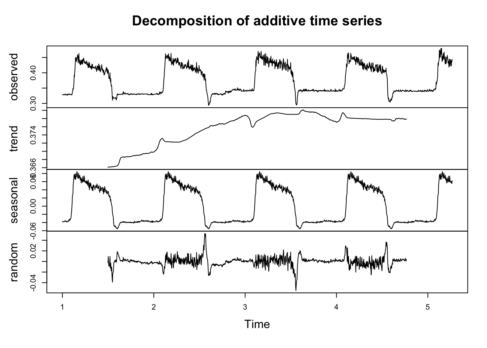
This shows us what that there may be a small trend in the series. It also confirms our intuition that seasonality is present.
We also can look at the ACF to check for the presence of auto-correlation in the time series.
acf(phen$observation, lag.max = 365)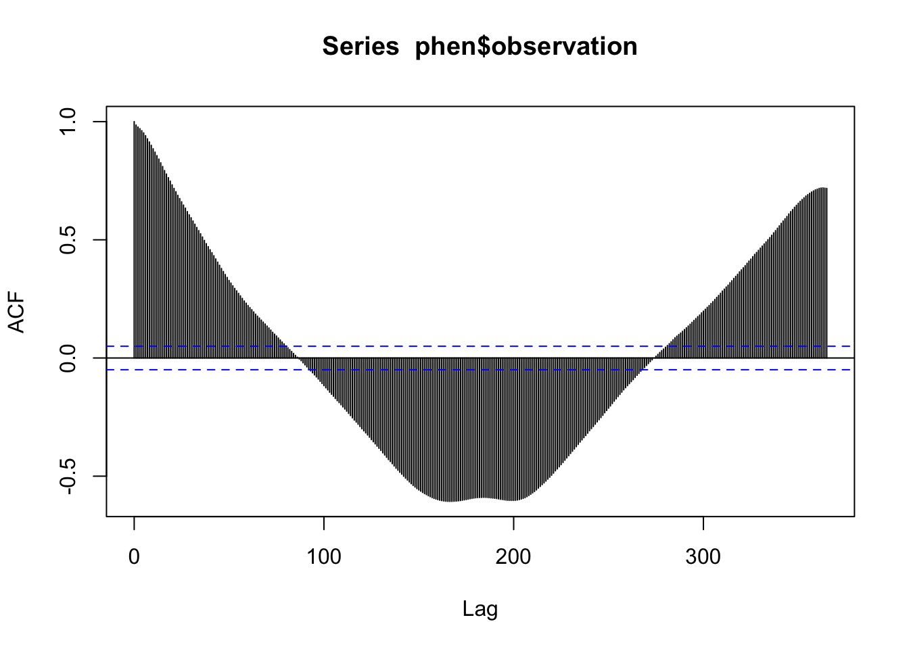
This shows that there seems to be multiple levels of autocorrelation occurring in the series. On one hand, the series is pretty sticky for nearly 100 days out. On the other hand, the direction of the correlation reverses for certain lags. This also supports the presence of both a trend and seasonal pattern.
Partitioning the data
When working with time dependent data, data partitioning should not be done randomly. Instead, we will use earlier observations in the data set for training and the remaining observations will be held back as a test set. Generally speaking, it is good to try to match the intended forecasting horizon with the size of the test set. The NEON challenge goal is to forecast at least 30 days out, so we will hold back 30 days of data (i.e. the most recent 30 observations).
n <- nrow(phen)
# The length of the data set minus the most recent 30 days
trainN <- n-30
testN <- trainN+1
# Index the earlier rows for training
train <- phen[1:trainN,]
# Index the later 30 for testing
test <- phen[testN:n,] ## or phen[-1:trainN,]
nrow(test) # Should be 30[1] 30Notice here that we’ve got ALL the data still in the testing dataset:
summary(test) X.1 DATE X project_id
Min. :1529 Length:30 Min. :1529 Length:30
1st Qu.:1536 Class :character 1st Qu.:1536 Class :character
Median :1544 Mode :character Median :1544 Mode :character
Mean :1544 Mean :1544
3rd Qu.:1551 3rd Qu.:1551
Max. :1558 Max. :1558
site_id datetime duration variable
Length:30 Length:30 Length:30 Length:30
Class :character Class :character Class :character Class :character
Mode :character Mode :character Mode :character Mode :character
observation update meanTemp minTemp
Min. :0.4186 Min. :0.4186 Min. :62.12 Min. :45.00
1st Qu.:0.4314 1st Qu.:0.4314 1st Qu.:68.86 1st Qu.:55.00
Median :0.4383 Median :0.4383 Median :71.33 Median :62.50
Mean :0.4377 Mean :0.4377 Mean :71.65 Mean :61.20
3rd Qu.:0.4445 3rd Qu.:0.4445 3rd Qu.:75.53 3rd Qu.:66.75
Max. :0.4567 Max. :0.4567 Max. :78.21 Max. :77.00
maxTemp meanRH minRH maxRH
Min. :73.00 Min. :49.12 Min. :25.00 Min. : 78.00
1st Qu.:77.00 1st Qu.:61.64 1st Qu.:35.00 1st Qu.: 93.00
Median :83.50 Median :74.26 Median :49.50 Median : 95.50
Mean :82.77 Mean :73.27 Mean :48.93 Mean : 94.23
3rd Qu.:88.75 3rd Qu.:82.77 3rd Qu.:61.50 3rd Qu.: 97.00
Max. :92.00 Max. :93.70 Max. :84.00 Max. :100.00
totalPrecipitation meanWindSpeed maxWindSpeed meanTempLag1
Min. :0.0000 Min. : 1.419 Min. : 8.00 Min. :62.12
1st Qu.:0.0000 1st Qu.: 3.735 1st Qu.:11.00 1st Qu.:68.25
Median :0.0000 Median : 6.073 Median :14.00 Median :70.56
Mean :0.4683 Mean : 5.808 Mean :14.67 Mean :71.16
3rd Qu.:0.1775 3rd Qu.: 7.288 3rd Qu.:17.00 3rd Qu.:75.28
Max. :4.5700 Max. :11.000 Max. :31.00 Max. :78.21
minTempLag1 maxTempLag1 meanRHLag1 minRHLag1
Min. :45.00 Min. :70.00 Min. :49.12 Min. :25.00
1st Qu.:54.25 1st Qu.:77.00 1st Qu.:61.64 1st Qu.:35.00
Median :62.00 Median :83.50 Median :74.26 Median :49.50
Mean :60.30 Mean :82.53 Mean :73.31 Mean :48.20
3rd Qu.:65.75 3rd Qu.:88.75 3rd Qu.:82.77 3rd Qu.:59.75
Max. :72.00 Max. :92.00 Max. :93.70 Max. :84.00
maxRHLag1 totalPrecipitationLag1 meanWindSpeedLag1 maxWindSpeedLag1
Min. : 78.00 Min. :0.0000 Min. :1.419 Min. : 8.00
1st Qu.: 93.00 1st Qu.:0.0000 1st Qu.:3.518 1st Qu.:10.25
Median : 97.00 Median :0.0000 Median :6.000 Median :14.00
Mean : 94.93 Mean :0.4683 Mean :5.534 Mean :14.57
3rd Qu.: 99.25 3rd Qu.:0.1775 3rd Qu.:7.122 3rd Qu.:17.00
Max. :100.00 Max. :4.5700 Max. :9.500 Max. :31.00 Modeling - Woot Woot 🥳
We discussed several kinds of models during the lecture. There are many more model types out there that you may encounter, but this set should get you a good start and will provide you with the foundation you need to continue learning on your own should you need to.
In each section, we will fit the model to the training set, generate forecasts to compare to the test set, and generate RMSE and MAE for each model on its test set performance to evaluate each one and compare them in the next section.
Simple modeling with ARIMA
We know that ARIMA can capture some trends, but is typically less good at seasonal patterns – and we’ve got some definite seasonal patterns. But let’s give it a go as our default modeling approach first. Remember that this doesn’t use any additional predictors, just the original time series, as a time series object:
ts.train <- ts(train$observation, frequency = 365)The ARIMA part is fitted via an automated process in the background so we do not have to manually specify p, d, and q. For more information about this process, see the documentation for the auto.arima() function.
Note that this is really really slow….
fit.arima<-auto.arima(ts.train)summary(fit.arima)Series: ts.train
ARIMA(3,1,3)(0,1,0)[365]
Coefficients:
ar1 ar2 ar3 ma1 ma2 ma3
-0.1565 0.4113 -0.3427 -0.1325 -0.6144 0.4668
s.e. 0.1900 0.1431 0.0806 0.1880 0.0853 0.1196
sigma^2 = 0.0001016: log likelihood = 3692.75
AIC=-7371.49 AICc=-7371.4 BIC=-7336.09
Training set error measures:
ME RMSE MAE MPE MAPE
Training set -3.637887e-06 0.008765938 0.005051129 -0.01726118 1.271912
MASE ACF1
Training set 0.4337004 -0.0008611739As always we first check the residuals – we can look across time, at the ACF, and at the histogram
par(mfrow=c(3,1), bty="n", mar = c(4,4,1,1))
plot(fit.arima$residuals)
acf(fit.arima$residuals, main="")
hist(fit.arima$residuals, main="")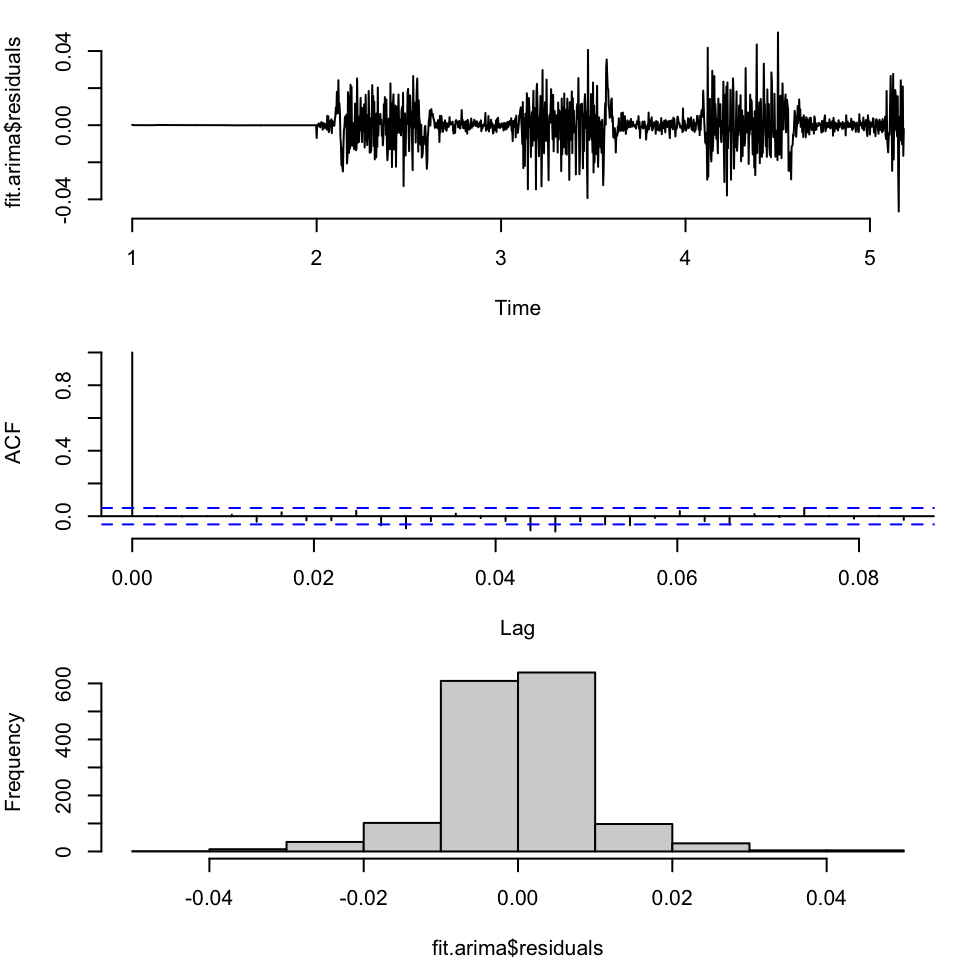
Not terrible, although we have non-constant variance in different parts of the space. So let’s make our first set of forecasts for this model, 30 days out:
arima.fc<-forecast(fit.arima, h=30)Then we can make a default plot of the forecast:
plot(arima.fc)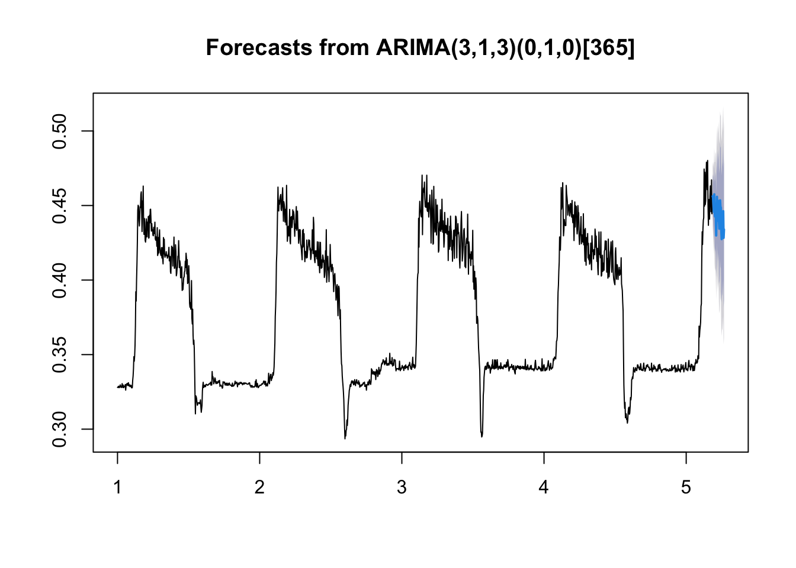
The forecast isn’t too bad. We can also look at the fit plus forecast bounds like in the lectures using base R (note I’m plotting the TESTING data also):
plot(as.vector(phen$observation), xlab="day", ylab="pheno", type="l", xlim=c(0, 1560),
col=1, lwd=2, ylim=c(0.25, 0.55))
lines(as.vector(fit.arima$fitted), col=2, lty=2, lwd=2)
lines(1528+1:30, arima.fc$mean, col="dodgerblue", lwd=2)
lines(1528+1:30, arima.fc$lower[,2], col="dodgerblue", lwd=2, lty=3)
lines(1528+1:30, arima.fc$upper[,2], col="dodgerblue", lwd=2, lty=3)
legend("topleft", legend=c("data", "fit", "FC"), col=c(1:2, "dodgerblue"), lty=c(1,2,1), lwd=2)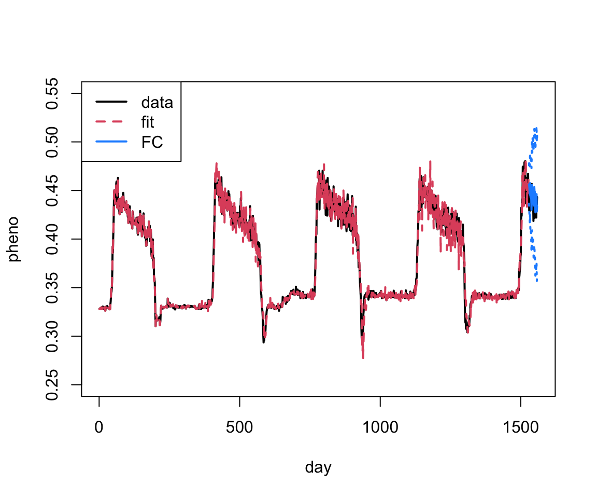
Pretty good! We can also just zoom in on the last part of the plot.
plot(as.vector(phen$observation), xlab="day", ylab="pheno", type="l", xlim=c(1160, 1560),
col=1, lwd=2, ylim=c(0.3, 0.525))
lines(as.vector(fit.arima$fitted), col=2, lty=2, lwd=2)
lines(1528+1:30, arima.fc$mean, col="dodgerblue", lwd=2)
lines(1528+1:30, arima.fc$lower[,2], col="dodgerblue", lwd=2, lty=3)
lines(1528+1:30, arima.fc$upper[,2], col="dodgerblue", lwd=2, lty=3)
legend("topleft", legend=c("data", "fit", "FC"), col=c(1:2, "dodgerblue"), lty=c(1,2,1), lwd=2)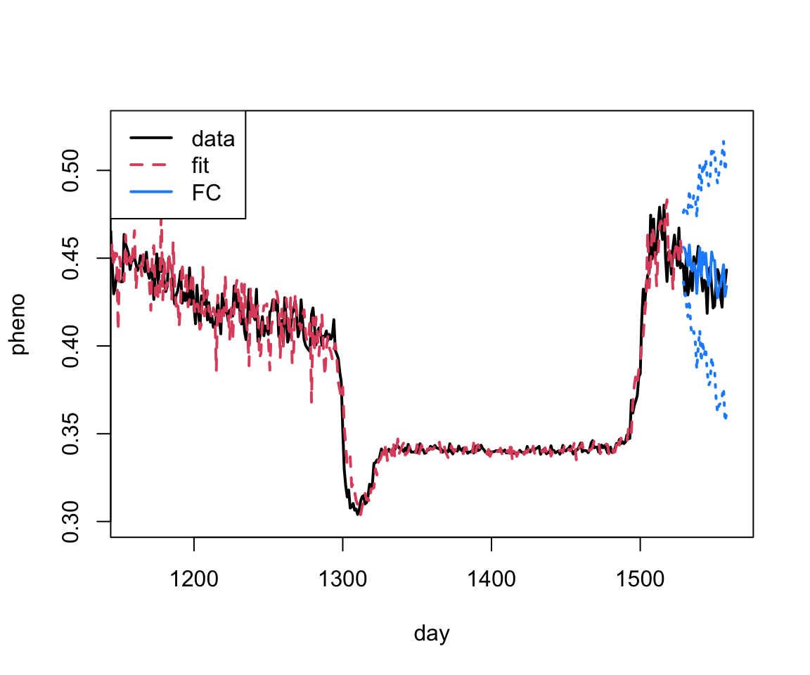
Let’s fit one more model then we’ll talk about out of sample comparisons…
Series Decomposition by Loess + ARIMA or Exponential Smoothing
In the lecture portion, we mentioned that one can smooth or fit a model first and then fit an AR or ARIMA model to the residuals. We’re going to show an example of this. In this approach the time series is first de-trended and de-seasonalized using something called loess smoothing. We’re going to treat loess as something of a black box – an alternative to the other smoothing methods we’ve talked about. If you want more details you can take a look here:
After we’ve applied the loess smoother, the remaining stationary series is modeled using ARIMA (or another method if we select a different one).
We will use the stl function (in base R with forecasting functionality supported through the forecast package) to do our fitting. Note, that stl (and the related stlm) also requires a UNIVARIATE time series object, like we used for the auto.arima function above. Further, this function is formally smoothing with lowess then fitting the ARIMA part in the background using the auto.arima function as above.
Below you can see the output for the STL + ARIMA model
# There are several options that we can customize in the stl()
# function, but the one we have to specify is the s.window.
# Check out the documentation and play around with some of the
# other options if you would like.
stl.fit.arima <- stlm(ts.train,
s.window = "periodic",
method = "arima")
summary(stl.fit.arima$model)Series: x
ARIMA(0,1,3)
Coefficients:
ma1 ma2 ma3
-0.3263 -0.1179 0.0410
s.e. 0.0257 0.0259 0.0263
sigma^2 = 3.873e-05: log likelihood = 5590.98
AIC=-11173.95 AICc=-11173.92 BIC=-11152.63
Training set error measures:
ME RMSE MAE MPE MAPE
Training set 1.262983e-05 0.006215367 0.004032053 -0.01602335 1.078008
MASE ACF1
Training set 0.3462004 0.001065878Let’s look at the residuals to see if there is anything left unaccounted for.
par(mfrow=c(3,1), bty="n", mar = c(4,4,1,1))
plot(stl.fit.arima$residuals)
acf(stl.fit.arima$residuals)
hist(stl.fit.arima$residuals)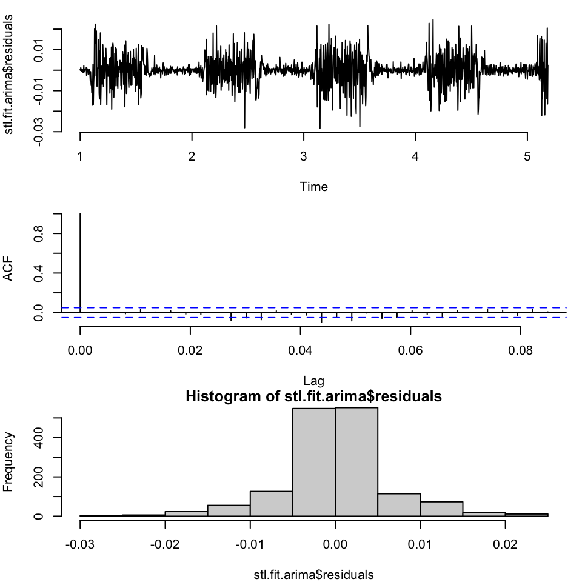
Again, this looks pretty good, although the variance is again non-constant – but these models can’t really handle this.
Now that we are comfortable with the model set up, we can generate forecasts. We will do that here for the loess + ARIMA model.
# We can generate forecasts with the forecast() function in the
# forecast package
stl.arima.forecasts <- forecast(stl.fit.arima, h = 30)
# The forecast function gives us point forecasts, as well as
# prediction intervals
stl.arima.forecasts Point Forecast Lo 80 Hi 80 Lo 95 Hi 95
5.186301 0.4472946 0.4393188 0.4552704 0.4350967 0.4594925
5.189041 0.4531159 0.4434988 0.4627330 0.4384079 0.4678240
5.191781 0.4476411 0.4370512 0.4582309 0.4314453 0.4638368
5.194521 0.4406500 0.4290394 0.4522606 0.4228931 0.4584069
5.197260 0.4452514 0.4327028 0.4578000 0.4260600 0.4644428
5.200000 0.4423128 0.4288916 0.4557340 0.4217868 0.4628388
5.202740 0.4429717 0.4287313 0.4572122 0.4211928 0.4647506
5.205479 0.4375731 0.4225581 0.4525882 0.4146096 0.4605367
5.208219 0.4404230 0.4246714 0.4561746 0.4163330 0.4645130
5.210959 0.4468553 0.4304001 0.4633106 0.4216892 0.4720214
5.213699 0.4412252 0.4240952 0.4583552 0.4150272 0.4674232
5.216438 0.4444451 0.4266659 0.4622242 0.4172542 0.4716359
5.219178 0.4360549 0.4176495 0.4544603 0.4079063 0.4642035
5.221918 0.4397223 0.4207112 0.4587333 0.4106474 0.4687972
5.224658 0.4513696 0.4317716 0.4709676 0.4213971 0.4813422
5.227397 0.4438545 0.4236866 0.4640224 0.4130104 0.4746986
5.230137 0.4433468 0.4226248 0.4640689 0.4116552 0.4750385
5.232877 0.4429392 0.4216774 0.4642011 0.4104220 0.4754564
5.235616 0.4404891 0.4187008 0.4622773 0.4071668 0.4738113
5.238356 0.4491964 0.4268942 0.4714986 0.4150881 0.4833047
5.241096 0.4469288 0.4241242 0.4697334 0.4120521 0.4818054
5.243836 0.4396761 0.4163800 0.4629723 0.4040477 0.4753046
5.246575 0.4386110 0.4148334 0.4623886 0.4022463 0.4749757
5.249315 0.4388684 0.4146189 0.4631178 0.4017821 0.4759547
5.252055 0.4363757 0.4116635 0.4610880 0.3985816 0.4741699
5.254795 0.4401331 0.4149665 0.4652997 0.4016441 0.4786221
5.257534 0.4372529 0.4116401 0.4628658 0.3980814 0.4764244
5.260274 0.4355078 0.4094563 0.4615593 0.3956655 0.4753501
5.263014 0.4369713 0.4104885 0.4634542 0.3964693 0.4774733
5.265753 0.4391473 0.4122400 0.4660546 0.3979962 0.4802985We can look at what is in this object using names:
names(stl.arima.forecasts) [1] "method" "model" "level" "mean" "lower" "upper"
[7] "x" "series" "fitted" "residuals"Here the fits and residuals from the original model are included. For our forecasting, the bits we’re interested in are mean which gives the mean forecast, and then lower and upper hold the lower and upper bounds (both at 80% and 95% levels), respectively.
Let’s visualize the forecasts! For the basic models available in the forecast package, we can use the plot() function to see a quick time series plot.
# Let's look at the forecasts!
plot(stl.arima.forecasts)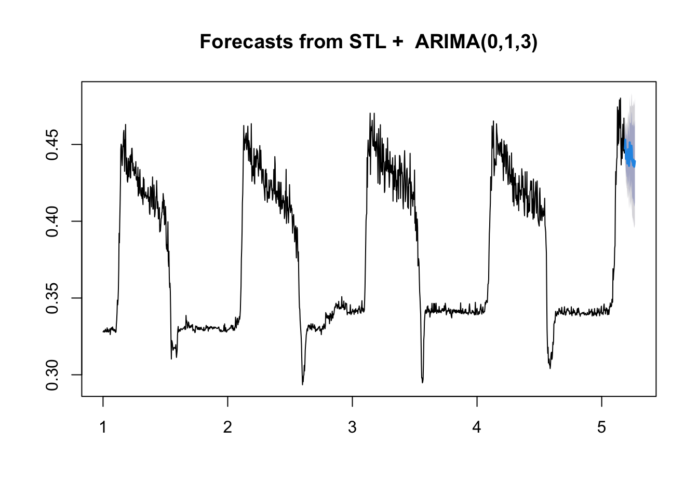
Comparing forecasts
Let’s compare the forecasts of both the naive ARIMA and the loess-ARIMA to the observed test series values.
# First make a data frame with both in there
compare <- data.frame(time = seq(1:30),
observed = test$observation,
forecast1 = arima.fc$mean,
forecast2 = stl.arima.forecasts$mean)
# What do you think??
ggplot(data = compare, aes(x = time, y = observed))+
geom_line(color = "blue")+
geom_point(color = "blue")+
geom_line(aes(y = forecast1), color = "red", lty=2)+
geom_point(aes(y = forecast1), color = "red", pch=1)+
geom_line(aes(y = forecast2), color = "darkred", lty=2)+
geom_point(aes(y = forecast2), color = "darkred", pch=1)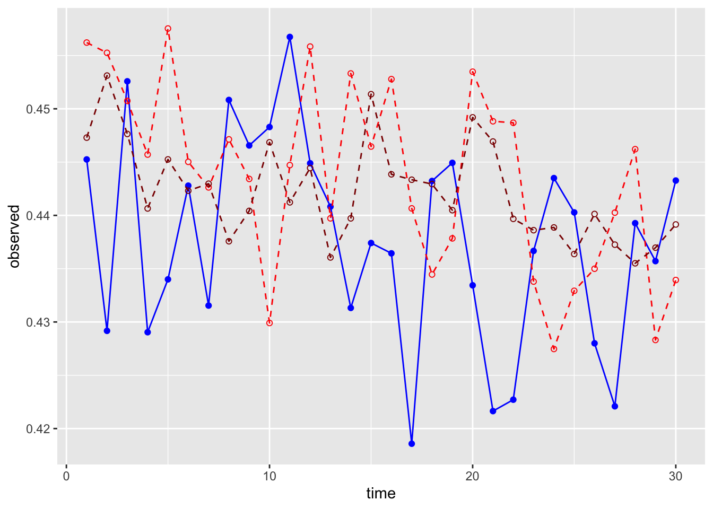
Notice that the two models give a bit different predictions. The loess+ARIMA seems less variable, and potentially less biased. But how can we tell for sure?
The best way to tell for sure is to generate some accuracy metrics and save them in a data frame for later use. We saw RMSE in the lecture. A second metric is Mean Absolute Error. This is given by
\text{MAE} = \frac{1}{n} \sum_{i=1}^n | y_i - \hat{y}_i|
These are already implemented in the Metrics package that we loaded at the beginning of the practical.
# Let's get the RMSE and MAE out and save them # for later.
arima.comps <- c(rmse = rmse(compare$observed,
compare$forecast1),
mae = mae(compare$observed,
compare$forecast1))
stl.comps <- c(rmse = rmse(compare$observed,
compare$forecast2),
mae = mae(compare$observed,
compare$forecast2))
comps.DF<-as.data.frame(rbind(arima.comps, stl.comps))
comps.DF rmse mae
arima.comps 0.01476680 0.012510542
stl.comps 0.01162321 0.009048619Exponential Smoothing
If you want to try out exponential smoothing, you will use method = "ETS" and you can specify different model types using etsmodel = "ANN" for example. Other potential models can be found in the lecture slides (e.g. “MNN”, “AAA”, etc.). Note that because we have de-trended and de-seasonalized the series, we do not really need the latter two letters to change from “N”.
stl.fit.ets <- stlm(ts.train, s.window = "periodic", method = "ets",
etsmodel = "ANN")
summary(stl.fit.ets$model)ETS(A,N,N)
Call:
ets(y = x, model = etsmodel, allow.multiplicative.trend = allow.multiplicative.trend)
Smoothing parameters:
alpha = 0.6313
Initial states:
l = 0.3656
sigma: 0.0063
AIC AICc BIC
-4297.935 -4297.920 -4281.940
Training set error measures:
ME RMSE MAE MPE MAPE MASE
Training set 1.059907e-05 0.006256006 0.004061156 -0.0163225 1.085953 0.3486993
ACF1
Training set 0.03936246Extra predictors with Linear Regression
In addition to the observation time series itself, we have a bunch of other predictor information. Maybe some of it will be useful for forecasting!
We could extend an ARIMA type model. For example, an additional argument in stlm() exists that allows for the inclusion of extra predictors into an ARIMA-based model post-decomposition. However, this function requires the predictors to exist in a separate matrix rather than inside of a data frame, which makes it somewhat challenging to use if you are unfamiliar with using matrices in R. Interpretation can also be more difficult.
So let’s go back and use our linear modeling approach, but add in a bit of spicy TS modeling aspects. We have a lot of predictors in our data set to choose from. Feel free to play around with them! For time’s sake, I am going to focus on lagged versions of mean temperature. Note that when we’re predicting into the future you usually don’t know what tomorrow’s temperature will be, so we often don’t include the temperature of the day itself. Let’s take a look at this predictor:
plot(train$meanTempLag1, type="l")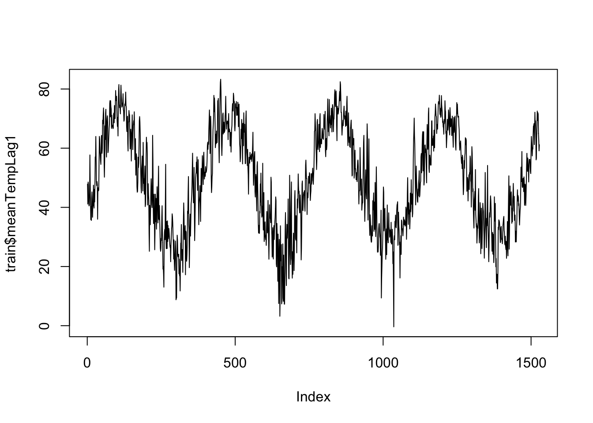
We can fit a really simple model here, and examine the residuals.
# We will start with just our predictors
lm.fit <- lm(observation ~ meanTempLag1,
data = train)
summary(lm.fit)
Call:
lm(formula = observation ~ meanTempLag1, data = train)
Residuals:
Min 1Q Median 3Q Max
-0.109866 -0.016777 0.001162 0.017598 0.091915
Coefficients:
Estimate Std. Error t value Pr(>|t|)
(Intercept) 2.666e-01 2.244e-03 118.79 <2e-16 ***
meanTempLag1 2.198e-03 4.299e-05 51.12 <2e-16 ***
---
Signif. codes: 0 '***' 0.001 '**' 0.01 '*' 0.05 '.' 0.1 ' ' 1
Residual standard error: 0.02831 on 1526 degrees of freedom
Multiple R-squared: 0.6314, Adjusted R-squared: 0.6311
F-statistic: 2614 on 1 and 1526 DF, p-value: < 2.2e-16acf(lm.fit$residuals, 365) 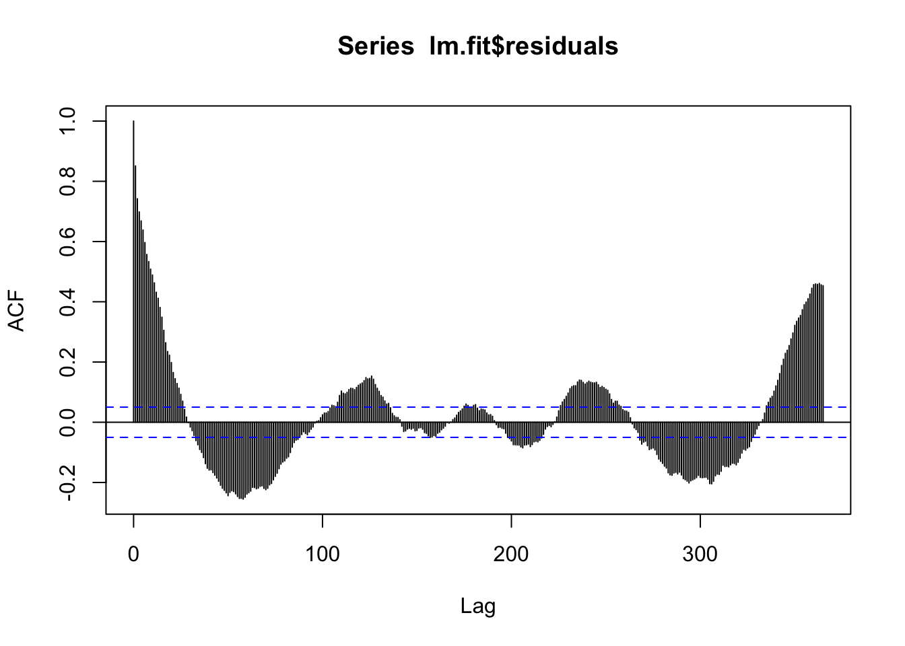
There is still a lot of seasonal signal left! So we know this isn’t a great model. Also, the temperature TS itself is really noisy, and further, we maybe expect that how many leaves are out on trees might depend on not just the temperature today, but maybe over the last week. So let’s start by filtering the temperature to smooth it out. Then I’ll fit a simple linear model of the filtered data.
## 7 day moving average, not including today
train$meanTempMA7 <- as.vector(stats::filter(ts(train$meanTemp),
filter = c(0,rep(1/7, 7)),
sides = 1))
plot(train$meanTempMA7, type="l")
The only down-side is that the first few terms are now going to be NAs, so we’ll have to trim when we fit:
train$meanTempMA7[1:10] [1] NA NA NA NA NA NA NA 43.68582
[9] 46.05725 45.95011Let’s add the sine and cosine terms into the data set to include them in the model for both the eventual model of the greeness and also for the temperature. We will need to do this for train and test. Note that if you were to be forecasting beyond test, you would need to generate these terms for those time points as well.
# Add to the training set
train$sinSeason <- sin((2*pi*train$X)/365)
train$cosSeason <- cos((2*pi*train$X)/365)
# Add to the testing set
test$sinSeason <- sin((2*pi*test$X)/365)
test$cosSeason <- cos((2*pi*test$X)/365)So first build a model for estimating average temperature over the previous 7 days using an ARIMA model:
temp.lm<-auto.arima(train$meanTempMA7)
summary(temp.lm)Series: train$meanTempMA7
ARIMA(2,0,1) with non-zero mean
Coefficients:
ar1 ar2 ma1 mean
1.3911 -0.3991 0.3679 49.4059
s.e. 0.0349 0.0348 0.0351 4.7291
sigma^2 = 1.278: log likelihood = -2345.93
AIC=4701.85 AICc=4701.89 BIC=4728.49
Training set error measures:
ME RMSE MAE MPE MAPE MASE
Training set 0.005395499 1.129179 0.851712 -0.001762966 2.106571 0.7484872
ACF1
Training set -0.001454693acf(temp.lm$residuals)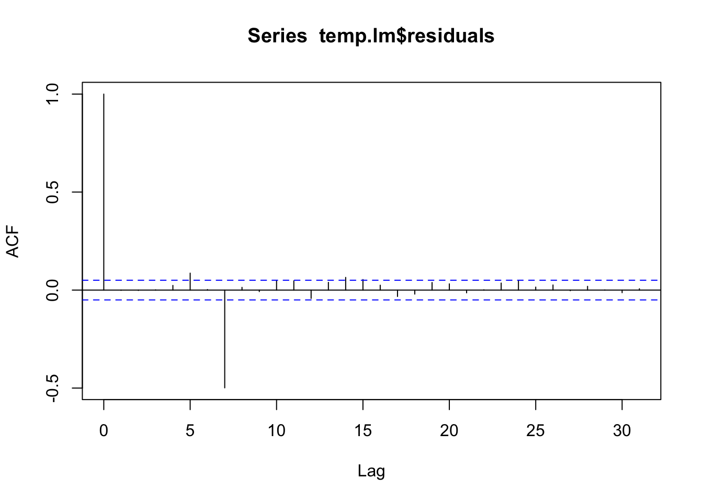
Pretty good! Now we forecast this ahead and add it to the testing data set. Note that this is already lagged….
temp.fc<-forecast(temp.lm, 30)
test$meanTempMA7<-temp.fc$meanNOTE: this is a point forecast and is uncertain. We will technically be underestimating the amount of noise in our full forecast.
Back to the main forecast! Let’s add in the sine and cosine terms for seasonality.
# Add seasonality via sine and cosine terms
lm.fit <- lm(observation ~ sinSeason + cosSeason + meanTempMA7,
data = train)
summary(lm.fit)
Call:
lm(formula = observation ~ sinSeason + cosSeason + meanTempMA7,
data = train)
Residuals:
Min 1Q Median 3Q Max
-0.07866 -0.01345 0.00263 0.01679 0.07124
Coefficients:
Estimate Std. Error t value Pr(>|t|)
(Intercept) 0.3349204 0.0071517 46.831 < 2e-16 ***
sinSeason 0.0372707 0.0031038 12.008 < 2e-16 ***
cosSeason -0.0116599 0.0014433 -8.079 1.32e-15 ***
meanTempMA7 0.0008089 0.0001449 5.581 2.83e-08 ***
---
Signif. codes: 0 '***' 0.001 '**' 0.01 '*' 0.05 '.' 0.1 ' ' 1
Residual standard error: 0.02426 on 1517 degrees of freedom
(7 observations deleted due to missingness)
Multiple R-squared: 0.7296, Adjusted R-squared: 0.729
F-statistic: 1364 on 3 and 1517 DF, p-value: < 2.2e-16acf(lm.fit$residuals, 365)
We’re still missing a lot….we can try to add in the trend.
# Add trend
lm.fit <- lm(observation ~ X + sinSeason + cosSeason + meanTempMA7,
data = train)
summary(lm.fit)
Call:
lm(formula = observation ~ X + sinSeason + cosSeason + meanTempMA7,
data = train)
Residuals:
Min 1Q Median 3Q Max
-0.080370 -0.013469 0.003456 0.016310 0.063255
Coefficients:
Estimate Std. Error t value Pr(>|t|)
(Intercept) 3.312e-01 7.034e-03 47.090 < 2e-16 ***
X 1.090e-05 1.413e-06 7.715 2.19e-14 ***
sinSeason 4.008e-02 3.067e-03 13.068 < 2e-16 ***
cosSeason -1.307e-02 1.428e-03 -9.153 < 2e-16 ***
meanTempMA7 7.138e-04 1.428e-04 5.000 6.41e-07 ***
---
Signif. codes: 0 '***' 0.001 '**' 0.01 '*' 0.05 '.' 0.1 ' ' 1
Residual standard error: 0.0238 on 1516 degrees of freedom
(7 observations deleted due to missingness)
Multiple R-squared: 0.7398, Adjusted R-squared: 0.7391
F-statistic: 1078 on 4 and 1516 DF, p-value: < 2.2e-16# Check for leftover autocorrelation in the residuals - still a lot.
# Stay tuned for how to deal with this! For now we will move
# forward.
acf(lm.fit$residuals)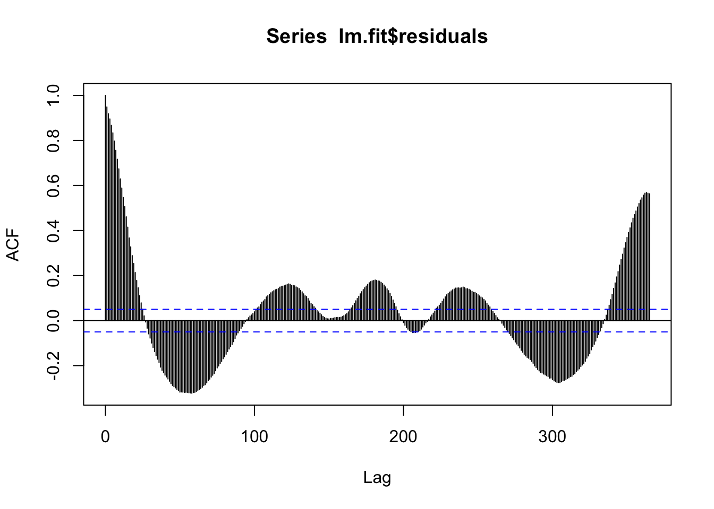
# These models still do assume normal residuals - these look good!
hist(lm.fit$residuals)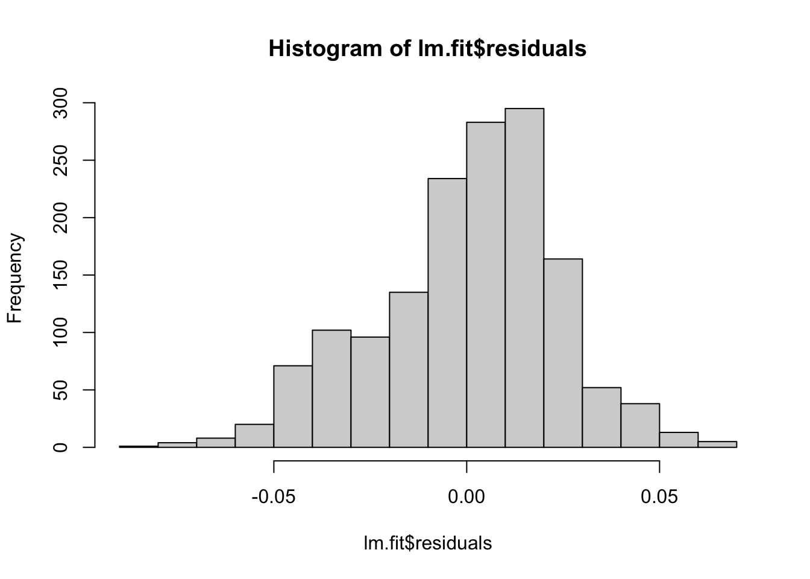
Next we’ll generate forecasts for this model.
# We can generate forecasts with the forecast() function in the
# forecast package
lm.forecasts <- forecast(lm.fit, h = 30, newdata = test)
# The forecast function gives us point forecasts, as well as
# prediction intervals
lm.forecasts Point Forecast Lo 80 Hi 80 Lo 95 Hi 95
1 0.4264719 0.3958881 0.4570557 0.3796811 0.4732628
2 0.4265667 0.3959814 0.4571521 0.3797735 0.4733599
3 0.4267938 0.3962068 0.4573807 0.3799981 0.4735895
4 0.4270695 0.3964809 0.4576582 0.3802712 0.4738679
5 0.4273601 0.3967696 0.4579506 0.3805590 0.4741612
6 0.4276517 0.3970592 0.4582442 0.3808475 0.4744558
7 0.4279386 0.3973440 0.4585332 0.3811312 0.4747460
8 0.4282185 0.3976216 0.4588153 0.3814076 0.4750293
9 0.4284903 0.3978910 0.4590895 0.3816757 0.4753048
10 0.4287535 0.3981516 0.4593553 0.3819350 0.4755719
11 0.4290078 0.3984033 0.4596123 0.3821853 0.4758303
12 0.4292530 0.3986458 0.4598603 0.3824263 0.4760798
13 0.4294891 0.3988790 0.4600992 0.3826580 0.4763202
14 0.4297158 0.3991027 0.4603288 0.3828801 0.4765514
15 0.4299330 0.3993168 0.4605491 0.3830927 0.4767733
16 0.4301406 0.3995213 0.4607598 0.3832955 0.4769856
17 0.4303384 0.3997160 0.4609609 0.3834885 0.4771884
18 0.4305265 0.3999009 0.4611521 0.3836716 0.4773814
19 0.4307046 0.4000757 0.4613335 0.3838447 0.4775645
20 0.4308727 0.4002405 0.4615049 0.3840078 0.4777376
21 0.4310306 0.4003951 0.4616662 0.3841606 0.4779007
22 0.4311783 0.4005394 0.4618172 0.3843032 0.4780535
23 0.4313157 0.4006734 0.4619579 0.3844354 0.4781960
24 0.4314426 0.4007970 0.4620883 0.3845572 0.4783281
25 0.4315591 0.4009101 0.4622081 0.3846685 0.4784497
26 0.4316650 0.4010127 0.4623173 0.3847693 0.4785606
27 0.4317602 0.4011045 0.4624158 0.3848594 0.4786609
28 0.4318446 0.4011857 0.4625035 0.3849389 0.4787504
29 0.4319183 0.4012561 0.4625804 0.3850075 0.4788290
30 0.4319811 0.4013157 0.4626464 0.3850654 0.4788967We can visualize the forecasts against the observed values if we add them to our compare data set.
# Add the forecasts to test
test$forecast <- lm.forecasts$mean
# and to the compare set
compare$forecast3 <- lm.forecasts$mean
# What do you think??
ggplot(data = compare, aes(x = time, y = observed))+
geom_line(color = "blue")+
geom_point(color = "blue")+
geom_line(aes(y = forecast1), color = "red", lty=2)+
geom_point(aes(y = forecast1), color = "red", pch=1)+
geom_line(aes(y = forecast2), color = "darkred", lty=2)+
geom_point(aes(y = forecast2), color = "darkred", pch=1)+
geom_line(aes(y = forecast3), color = "brown", lty=2)+
geom_point(aes(y = forecast3), color = "brown", pch=1)This linear model is much different! It’s partly because we don’t include an AR term in the model and also because we are including a forecast of the temperature, which is relatively smooth.
Finally we will generate and save the accuracy metrics again.
lm.comps <- c(rmse = rmse(test$observation, test$forecast),
mae = mae(test$observation, test$forecast))
comps.DF <-as.data.frame(cbind(model = c("arima", "stl", "lm"), rbind(arima.comps, stl.comps, lm.comps)))
comps.DF model rmse mae
arima.comps arima 0.0147668036444357 0.0125105424697741
stl.comps stl 0.0116232134034618 0.00904861924106935
lm.comps lm 0.0129054709145573 0.0108634504332085Evaluate and Compare Performance
We have been saving performance metrics for all of our models so far - let’s check them out with a graph! Remember - for RMSE and MAE, lower is better. Feel free to take the inverse and look at that if it is confusing to consider this visually.
# Which model did the best based on RMSE?
ggplot(data = comps.DF, aes(x = model, y = rmse))+
geom_bar(stat = "identity", fill = "slateblue1")+
labs(title = "RMSE Comparison")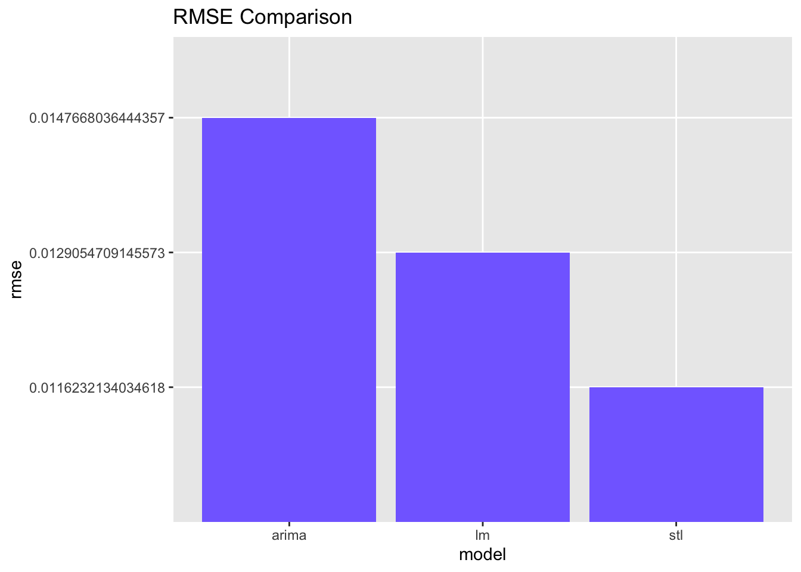
# Which model did the best based on MAE?
ggplot(data = comps.DF, aes(x = model, y = mae))+
geom_bar(stat = "identity", fill = "plum")+
labs(title = "MAE Comparison")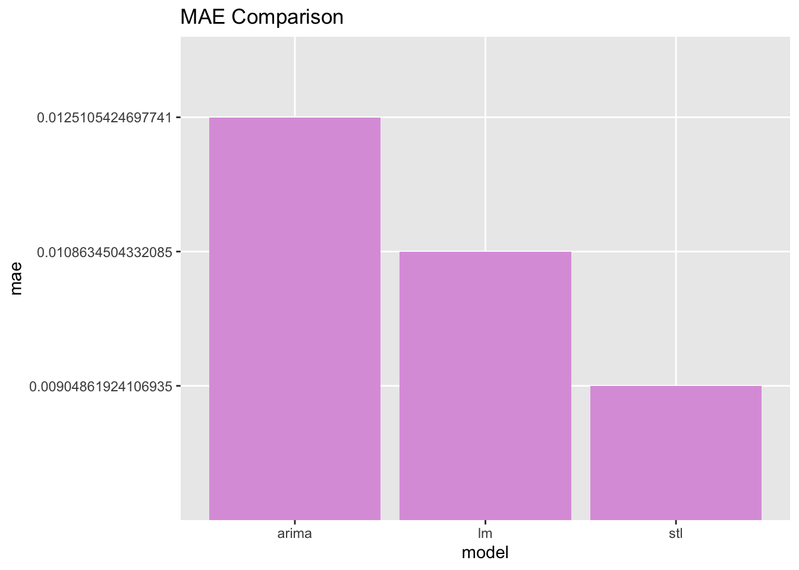
If we were to want to forecast tree greenness for real, we could try to fine tune the models more to get even better results.
Next Steps
To generate the real forecasts, we would re-fit the best model using all of the data we have. Using the new model parameters, we would then make forecasts out to the desired horizon (in this case 30 days out).
REMEMBER: When you generate the forecasts, you will also have to forecast any predictors you used in your model!! For example, if we used the temperature in our model we would need to either find forecasted temperatures for our horizon or generate other forecasting models to build our own temperature forecasts.
Citation
BibTeX citation:
@online{arneson2025,
author = {Arneson, Alicia and Johnson, Leah R.},
title = {VectorByte {Methods} {Training:} {Introduction} to {Time}
{Series} and {Forecasting} (Practical)},
date = {2025-06-01},
langid = {en}
}
For attribution, please cite this work as:
Arneson, Alicia, and Leah R. Johnson. 2025. “VectorByte Methods
Training: Introduction to Time Series and Forecasting
(Practical).” June 1, 2025.